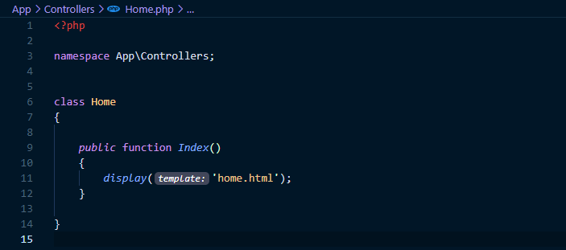
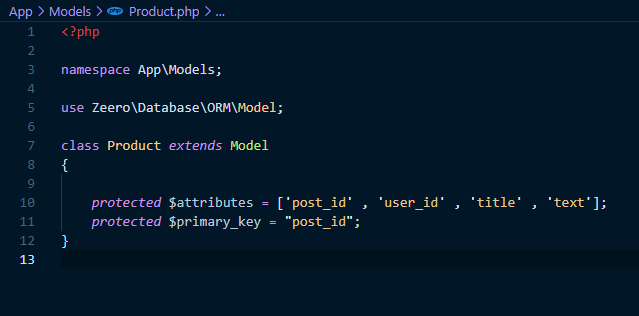

Model View Controller
MVC é um Padrão de Arquitectura de Software muito usado em Desenvolvimento Web,
permite divisão de responsablidades dos componentes de um módulo ou aplicação. Zeero
seguindo esse padrão , apresenta um estrutura de pastas de fácil entendimento e uso.
- Controllers contém os
controllers, incluíndo os
requests e commands.
- DataBase contém as
migrations, json resources e os seeds.
- Logs contém arquivos locais
de logs
- Models contém os
models
- public directório público
- Routes contém o arquivo de
definição de rotas
- Views contém as views
e todos arquivos
relacionados a templates
Controller
Os Controllers são geralmente classes que recebem informações externas , processam e
retornam uma resposta.
Abaixo podemos ver exemplo de um controller:

Model
Os Modelos são classes que representam uma tabela na base de dados, estas classes se extendem
de
Zeero\DataBase\ORM\Model, uma classe que disponibliza para cada modelo um conjunto de
metódos que facilitam
a manipulação e persistência de dados.
Classes Modelos apresentam quatro atributos protegidos (protected) :
- attributes - um array contendo os campos da tabela
- primary_key - uma string que corresponde ao nome do campo
que é chave
primária na
tabela
- foreign_keys - um array usado para definir as chaves
estrangeiras que a
tabela
possui ( este attributo
é opcional ).
- table - uma string que corresponde ao nome da tabela que
o modelo representa
(usado para modelos que o nome não conscide com o nome da tabela) .
Abaixo podemos ver exemplo de um modelo:

VIEW
O directório Views contém os arquivos relacionados com o Twig que é o
Engine Template
padrão do Zeero.
Estrutura da pasta Views:
- helpers - arquivos que
incluem dependências
comuns entre templates.
- renders - templates
dinâmicos ( que usam dados
externos ).
- template - templates
estáticos ou bases da
outros templates.
- filters.php - definição de
novos filtros Twig.
- functions.php - definição
de novas funções
Twig.